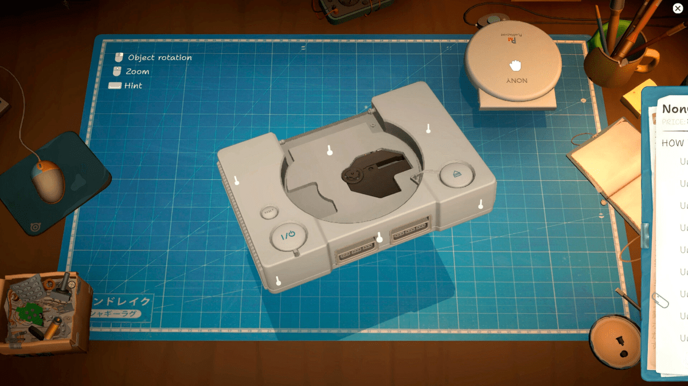

Il y a un nouveau jeu cosy sur Steam qui cartonne dans lequel vous réparez de vieilles consoles

🔥 Top produits tech du moment
🛒 Voir le prix : Apple EarPods (USB-C)
Publicité — Liens de partenariat Amazon : une commission peut être reversée, sans surcoût pour vous.
L'actualité tech ne cesse d'évoluer. Nouveaux produits, acquisitions, découvertes : chaque jour apporte son lot d'informations importantes pour comprendre le monde numérique de demain.
Ce qu'il faut retenir
Les jeux vidéo permettent de s'évader, le temps d'une poignée d'heures, en incarnant toutes sortes de personnages plongés dans des aventures épiques et spectaculaires, comme dans ce jeu où vous incarnez un réparateur amateur de vieilles consoles de jeux vidéo.
Pourquoi c'est important
Cette information pourrait avoir des répercussions sur tout le secteur technologique. Elle concerne directement les utilisateurs de technologies numériques et mérite d'être suivie de près dans les prochaines semaines. Il y a un nouveau jeu cosy sur Steam qui cartonne dans lequel vous réparez de vieilles consoles est ainsi un signal à prendre en compte pour comprendre les évolutions du secteur.
En résumé
Retenez l'essentiel : Il y a un nouveau jeu cosy sur Steam qui cartonne dans lequel vous réparez de vieilles consoles. Cette actualité a été rapportée par Numerama. Nous continuerons de suivre ce sujet et de vous tenir informés des prochaines évolutions.
🚀 Vous êtes freelance tech ?
Calculez votre TJM en 30 secondes : micro-entreprise, SASU, EURL ou portage salarial. Gratuit, taux 2025.
Calculer mon TJM →Source : Numerama